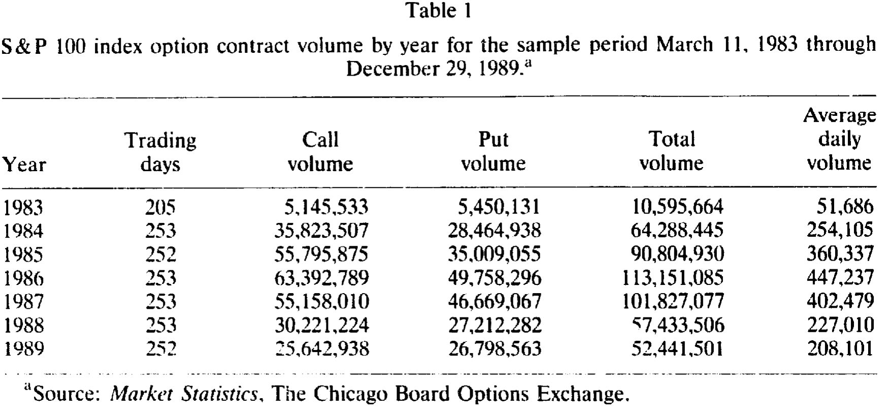
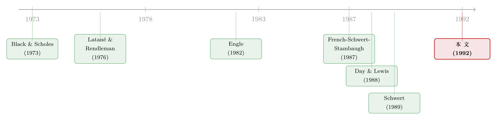

波动率可以预测，却赚不到钱——一桩关于市场有效性的「无罪判决」
本文读的是 Harvey & Whaley (1992, Journal of Financial Economics)：作者从 S&P 100 指数期权（OEX）的逐笔成交价里反解出市场的隐含波动率，统计上干净利落地否定了「波动率变化不可预测」这一假说；但当他们把这套精确的预测真的拿去交易时，扣掉交易成本后赚不到任何超额收益。于是结论反转——可预测的时变波动率，与市场有效性并不矛盾。
1 一个让人难受的悖论
先从一个让所有做量化的人都心痛的事实说起：市场的波动率，是会变的。
这句话听上去是废话，但它一旦成立，麻烦就接踵而至。因为在几乎所有的定价模型里，风险都是用波动率来度量的，而变动的波动率会改变所有资产的预期收益。换句话说，如果我们能摸清波动率明天会怎么走，我们似乎就握住了一把能预测预期收益、甚至能直接套利的钥匙。
于是过去几十年里，学界造出了一大堆模型来刻画波动率的动态——从最朴素的滚动方差 (rolling variance)，到 Engle (1982) 的自回归条件异方差 (autoregressive conditional heteroskedasticity, ARCH)，再到各种非参数方法。它们都在回答同一个问题：明天的波动率是多少？
但这里藏着一个谁也绕不过去的尴尬。真实的条件波动率，是看不见的。我们来看它的定义：
问题就出在那个 \(\Omega_{t-1}\) 上。经济理论根本不告诉我们这个「真实信息集」长什么样，也不告诉我们信息是经由怎样一个（很可能高度非线性的）过程转化成预期的。更糟的是，条件方差不满足迭代期望法则——你用一个信息子集估出来的波动率，没有任何保证会贴近真实的条件波动率。
正是这种「事前、不可观测、且不知道生成机制」的三重困境，才逼得人们造出了那么多互相竞争的统计模型。每一个模型都给出一个不同的波动率估计，而你永远无法判断谁对谁错。
那么——有没有一条路，可以绕开对统计模型的依赖？
2 把市场的「共识」直接读出来
这篇论文给出的答案，藏在期权价格里。
接着，一个自然的问题是：期权价格凭什么能告诉我们波动率？回到指数期权的定价函数。一份指数看涨期权的理论价格 \(c\)，是六个参数的函数：
$$c = c\,(S,\, X,\, T,\, r,\, \sigma,\, D)$$
其中 \(S\) 是指数水平，\(X\) 是行权价，\(T\) 是到期时间，\(r\) 是无风险利率，\(\sigma\) 是指数收益率的标准差，\(D\) 是期权存续期内的股息。这六个里，五个都是现成的：行权价和到期日是合约条款，指数水平和利率是市场上能直接读到的，而由于成分股的季度股息相当稳定、短期期权的股息几乎没有不确定性，\(D\) 也基本已知。
于是只剩下一个未知数：\(\sigma\)。
这就是全文的支点。如果市场价格反映了全部可得信息，又如果定价模型设定正确，那么我们只要把观测到的期权价格与模型价格对齐，反过来解这个方程，就能把市场对未来波动率的共识给「萃取」出来。这个被解出来的 \(\sigma\)，就是隐含波动率 (implied volatility)。
这一步的妙处，在于它不需要设定任何把事后波动率连到事前波动率的时间序列模型。而这恰恰是巨大的优势——因为真实的预测模型究竟长什么样，没人知道；它用的那套工具变量，甚至可能随时间而变。隐含波动率一步到位地把这些都跳过了。（关于「不靠模型读波动率」这条思路后来走到了哪一步，可参见《拿掉那把叫「模型」的尺子，期权市场才被公正地审了一次》。）
当然，天下没有免费的午餐。这条路的代价是：你必须假定期权价格确实反映了全部信息，且定价模型设定正确。后面我们会看到，作者用一个相当巧妙的「黑箱」论证，把这个软肋变成了不是问题。
3 魔鬼在细节里：怎样才算「正确地」读出波动率
但真正关键的一步，在于怎么读。
这正是本文与前人最不一样的地方。在它之前，大量研究 S&P 100 期权的工作犯了两类错误：一是用欧式期权公式，二是用收盘价数据。
为什么欧式公式不行？因为 S&P 100 期权是美式的——事实上，它是当时唯一还在交易的美式股指期权。Harvey & Whaley 在他们的姊妹篇里证明，这些期权的提前行权 (early exercise) 极为常见，无论看涨还是看跌，提前行权溢价都可能相当大。用欧式公式，等于一上来就把价格读偏了。
为什么收盘价不行？这里有两个魔鬼级的细节。第一，S&P 100 期权市场下午 3:15（CST）才收盘，而底层股票市场 3:00 就关门了——两个价格根本不同步。第二，当天最后一笔期权成交价到底是买价还是卖价，全看那笔交易是谁主动发起的，这就引入了买卖价差的噪声。
于是作者立下三条规矩，并且全部照办：
- 估值方法必须是美式的，且要处理 S&P 100 的离散现金股息；
- 必须用同步的期权价格与指数水平；
- 估计波动率时要用多笔成交，而不是单笔。
具体怎么做？他们在每天股票市场收盘（3:00 PM）前后取一个十分钟的窗口，把窗口内所有近月、平价 (at-the-money) 的期权成交，放进一个非线性回归里，用观测价格去拟合模型价格，从而得到当天的波动率。这十分钟里，看涨期权的成交笔数中位数是 45 笔，看跌期权是 35 笔——样本量足够大，买卖价差的误差被有效地稀释掉了。而且由于每条成交记录都带着当时的指数水平，不同步的问题被彻底消除。他们还给看涨和看跌分别估了一个波动率，因为已有证据显示两者的波动率系统性地不一样。
还有一个容易被忽略的小东西：万能牌期权 (wildcard option)。由于期权市场比股票市场晚 15 分钟收盘，持有者可以等到 3:15 再决定要不要按 3:00 的指数水平行权——这等于白送了一份看跌期权。作者算了笔账：用 S&P 500 期货 3:00–3:15 的收益做代理，这 15 分钟指数的期望变动只有约 6¢，95% 置信区间是 249.16 到 250.96（假设 3:00 价为 250）。即便是这么大的隐含价格波动，跟一份平价期权的时间价值（一份 15 天到期、行权价 250 的平价看涨期权值 $4.24）相比也微不足道。所以在他们的样本（平价、至少 15 天到期）里，万能牌的价值小到可以忽略。
至于美式定价本身，作者用的是一个调整股息的二项式 (binomial) 方法。它的核心技巧，是把指数网格定义在扣除股息现值之后的水平上。我们一步步看。
第一步，算出扣除所有承诺股息现值后的当前指数：
$$S_0^* = S_0 - \sum_i D_i(t_i)\, e^{-r\,t_i}$$
第二步，在 \(S_0^*\)（而非 \(S_0\)）上铺二项式格子。一个时间步 \(\Delta t\) 之后，指数要么上行到 \(uS_0^*\)，要么下行到 \(dS_0^*\)，其中
$$u = e^{\sigma\sqrt{\Delta t}}, \qquad d = \frac{1}{u}, \qquad p = \frac{r^* - d}{u - d}, \qquad r^* = e^{r\,\Delta t}$$
这里 \(p\) 与 \(1-p\) 是上行、下行的转移概率。一个细节体现了作者对精度的执着：时间步数被设为期权剩余天数的两倍——计算昂贵，但保证了隐含波动率的高精度估计。
第三步，从期权到期日往回倒推。到期时每个节点的期权值就是内在价值，看涨期权为
$$c_{n,j} = \max\!\left(S_{n,j}^* - X,\; 0\right)$$
第四步，往前一格的值，等于未来期望值的现值：
$$c_{n-1,j} = \frac{p\, c_{n,j} + (1-p)\, c_{n,j+1}}{r^*}$$
第五步——也是美式期权的关键——在每往回走一格之前，都要检查节点值是否低于提前行权收益。如果某个时点付了股息，提前行权所得就要把那笔股息加回去；倒推时还要逐步累计存续期内已付股息的现值 \(PVD\)。等整个迭代走到时点 0，行权边界自然就包含了全部承诺股息的现值，与第一步的 \(S_0^*\) 首尾呼应。
整套机制并不神秘，但每一个螺丝都拧到位了——这正是后面那个「黑箱」论证敢于成立的底气。
4 数据：全世界最活跃的期权市场
说回数据。S&P 100 指数期权市场，是当时世界上最活跃的股指期权市场。这一点光看成交量就一目了然。
这些期权 1983 年 3 月推出，当年日均约 5 万张合约；之后成交量迅猛攀升，到 1986 年顶峰时日均近 447,237 张；1987 年 10 月股灾之后大幅回落，到 1989 年日均 208,101 张——相对其他股指期权市场仍属高位，但已远低于股灾前的水平。

Table 1
实证用的隐含波动率数据，来自芝加哥期权交易所 (CBOE) 提供的 S&P 100 看涨与看跌期权逐笔成交记录，区间是 1985 年 10 月至 1989 年 7 月。每条记录都包含期权身份、成交时间、成交价、成交张数，以及成交那一刻的指数水平。样本被限制在近月、平价、且至少 15 天到期的看涨与看跌期权上。无风险利率用最接近到期日（或至少 30 天到期）的国库券有效收益率代理，股息则用期权存续期内实际发生的现金股息。
5 反转：统计上「显著」，经济上「白搭」
万事俱备，核心检验登场。
逻辑很直接：如果隐含波动率服从随机游走 (random walk)，那么它的变化应当与任何信息变量都正交 (orthogonal)。这个随机游走假设听上去很天真，但作者特意提到——和实务交易员聊下来，发现这个模型在指数期权交易里被广泛采用。于是检验就成了：把隐含波动率的变化，对一组信息变量做回归，看正交性是否成立。
结果是：正交性被拒绝。市场波动率的变化，在统计意义上是可以预测的。换句话说，那个被交易员们奉为圭臬的「随机游走」假设，站不住脚。
故事到这里，似乎该奔向一个激动人心的结论了：既然波动率可预测，那就该能赚钱。然后——反转出现了。
作者没有止步于统计显著性。他们把这套样本外的波动率预测真的拿去做了一笔套利交易：用预测出的明天的隐含波动率给期权定价，再根据市场价格与模型价格的偏离去执行交易策略。如果这个策略能赚到超额收益，那就说明波动率的可预测性是有经济价值的。
可交易模拟的结果是：尽管预测相当精确，扣除交易成本之后，套利利润并不存在。
这就是全文最漂亮的地方。它把「统计上的可预测」与「经济上的可利用」之间那条常被人忽略的鸿沟，量化地摆在了你面前。波动率确实在以一种可被统计模型捕捉的方式变动着，但这种可预测性，恰恰因为无法转化为扣费后的利润，而与市场有效性完全相容。S&P 100 指数期权市场，是有效的。
这里还有一处常被略过的精妙设计，专门用来堵住一个质疑：万一是定价模型错了呢？作者的回答是——把模型当成一个「黑箱」(black box)，它只负责把价格翻译成隐含波动率（用于预测），再把波动率的预测翻译回价格。如果交易策略赚了超额利润，那这利润不可能归因于定价模型的设定误差（因为进出都用同一个黑箱）；反过来，如果策略没赚到，模型设定误差才可能是个问题。由于隐含波动率是期权价格的非线性变换，「最优的隐含波动率线性预测」并不等于「最优的期权价格预测」——这恰恰为「预测精确却赚不到钱」留下了空间。
6 文献脉络
把这篇论文放回它的坐标系，会看得更清楚。
最早，刻画市场波动率靠的是粗糙的滚动方差（Officer, 1973）。真正的转折发生在期权定价革命之后：Black & Scholes (1973) 给了一个把波动率与期权价格绑在一起的公式，而 Latané & Rendleman (1976) 第一次提出，可以反过来用期权价格里的隐含波动率去预测未来的波动率。
与此同时，另一条线在统计建模上突飞猛进。Engle (1982) 的 ARCH 模型让「波动率会扎堆」第一次有了严谨的计量框架（关于这条线后来的演化，可参见《GARCH 从哪儿来？——把「波动会扎堆」这件事，还给投资者的情绪》）；French, Schwert & Stambaugh (1987) 把预期收益与波动率连了起来；Schwert (1989a) 则系统追问「市场波动率为什么会随时间变化」。

到了 1980 年代末，两条线开始交汇于 S&P 100 期权这个具体战场。Day & Lewis (1988) 研究指数期权隐含波动率的行为，随后 (1990) 又比较隐含波动率与 GARCH 在样本外预测上的高下。Harvey & Whaley (1992) 站在这个交汇点上，做了一件别人没做的事：他们不再纠缠于「哪个模型预测得更准」（因为真实波动率不可观测，这个问题本就无解），而是把矛头转向经济含义——可预测性到底能不能变成钱。这一问，就把一个纯粹的统计问题，升格成了一个关于市场有效性的判决。
7 评论与延伸（Q&A + 研究方向）
(a) 几个可能的疑问
Q：「拒绝随机游走」和「市场无效」，难道不是一回事吗？
不是，这正是本文的核心洞见。随机游走被拒绝，只说明波动率的变化在统计上可被预测；而市场是否有效，取决于这种可预测性能否在扣除交易成本后转化为超额收益。本文恰恰证明了两者可以并存——预测很准，但赚不到钱。
Q：既然真实条件波动率不可观测，凭什么说隐含波动率是个好代理？
作者很诚实地承认这是个假设，而非定论。他们的策略不是去「证明」隐含波动率最准（这无法证明），而是假定它是条件波动率的合理代理，然后分析其时间序列性质。代理的可靠性，取决于定价模型的精度和估计所用信息的可靠性——这也是他们花大力气处理美式行权、同步价格、多笔成交的原因。
Q：为什么非得用美式二项式，欧式 Black-Scholes 不香吗？
因为 S&P 100 期权是美式的，且提前行权非常普遍、溢价可能很大。用欧式公式会系统性地读偏隐含波动率。这不是吹毛求疵——它直接决定了你萃取出的「市场共识」是否可信。
Q：万一是定价模型设定错了，才让套利策略失灵呢？
作者用「黑箱」论证堵住了这个口子。模型只做价格↔波动率的双向翻译，进出同源。若策略赚钱，利润不可能来自模型误差；若策略不赚钱（实际结果），模型误差才可能是因素之一。这个不对称的论证结构，让「无套利」的结论格外稳健。
Q：交易成本在这里扮演了什么角色，会不会被夸大了？
交易成本是把「统计显著」打回「经济无意义」的关键。本文的贡献恰在于把它认真算进去——很多只看回归 t 值的研究会忽略这一步。当然，成本的具体设定（买卖价差、佣金）会影响结论的强弱，这也是后续工作可以推敲之处。
Q：这个结论今天还成立吗？
本文是 1992 年、用 1985–1989 的数据。此后波动率衍生品（如 VIX 及其期货/期权）的兴起，让「直接交易波动率」成为可能，交易成本结构也大变。当年「赚不到钱」的结论，在一个能低成本做多/做空波动率的世界里未必照搬（这条线的当代版本，可参见《恐慌指数也能定价：当 2008 把所有「均值回归」模型一起按在地上摩擦》）。
(b) 几个可能的研究问题与提案
1. 把同样的「统计 vs. 经济」拷问搬到公司债市场的隐含波动率上
【经济故事】公司债既含信用风险又含利率风险，其「隐含波动率」可以从可赎回债或债券期权里反解。如果信用利差的波动率在统计上可预测，但扣除公司债特有的高交易成本（宽买卖价差、低换手）后无法套利，那本文的「无罪判决」就在信用市场得到了一个更强的版本——因为成本更高，门槛更高。
【可行性】中。需要 TRACE 逐笔成交、可赎回债条款数据，以及一个能处理信用+利率双因子的债券期权定价框架。识别上的难点是公司债流动性本身高度时变，需把流动性折价与波动率溢价干净地分开。
2. 外资持有人结构如何影响隐含波动率的可预测性
【经济故事】不同投资者群体对信息的反应速度不同。若某市场外资占比高，而外资在波动率冲击下「追涨杀跌」或「赖着不走」，隐含波动率的可预测成分可能更大。这把「波动率可预测但不可套利」与持有人结构连了起来。
【可行性】中偏低。需要带投资者类别标签的期权持仓数据（多数市场不公开），或用可投资度 (investability) 变动做准自然实验。识别可借鉴跨国面板，但期权层面的外资数据极稀缺。
3. 交易成本下降是否「激活」了曾被判无效的可预测性
【经济故事】本文的结论高度依赖 1980 年代的交易成本。一个干净的检验是：利用某次显著降低期权交易成本的制度变更（如最小报价单位从 1/8 降到 1 美分、或电子化），看同一套波动率预测策略的扣费后收益是否从「不显著」变为「显著」。这等于给「市场有效性是成本的函数」这一命题提供因果证据。
【可行性】高。最小报价单位改革是经典的断点/事件研究素材，期权成交数据可得，识别策略成熟（前后对比 + 控制组）。这是三个里最 doable 的一个。
参考文献
- Black, Fischer, and Myron S. Scholes (1973). The pricing of options and corporate liabilities. Journal of Political Economy 81, 637–659.
- Day, Theodore E., and Craig M. Lewis (1988). The behavior of the volatility implicit in the prices of stock index options. Journal of Financial Economics 22, 103–122.
- Engle, Robert F. (1982). Autoregressive conditional heteroskedasticity with estimates of the variance of U.K. inflation. Econometrica 50, 987–1008.
- Feinstein, Steven (1989). The Black-Scholes formula is nearly linear in σ for at-the-money options. Unpublished manuscript, Federal Reserve Bank of Atlanta.
- French, Kenneth R., G. William Schwert, and Robert F. Stambaugh (1987). Expected stock returns and volatility. Journal of Financial Economics 19, 3–30.
- Harvey, Campbell R., and Robert E. Whaley (1991). S&P 100 index option volatility. Journal of Finance 46, 1551–1561.
- Harvey, Campbell R., and Robert E. Whaley (1992). Market volatility prediction and the efficiency of the S&P 100 index option market. Journal of Financial Economics 31, 43–73.
- Latané, Henry A., and Richard J. Rendleman, Jr. (1976). Standard deviations of stock price ratios implied in option prices. Journal of Finance 31, 369–381.
- Officer, Robert R. (1973). The variability of the market factor of the NYSE. Journal of Business 46, 434–453.
- Roll, Richard (1977). An analytic valuation formula for unprotected American call options on stocks with known dividends. Journal of Financial Economics 5, 251–258.
- Schwert, G. William (1989). Why does stock market volatility change over time? Journal of Finance 44, 1115–1153.
- Whaley, Robert E. (1986). Valuation of American futures options: Theory and empirical tests. Journal of Finance 41, 127–150.